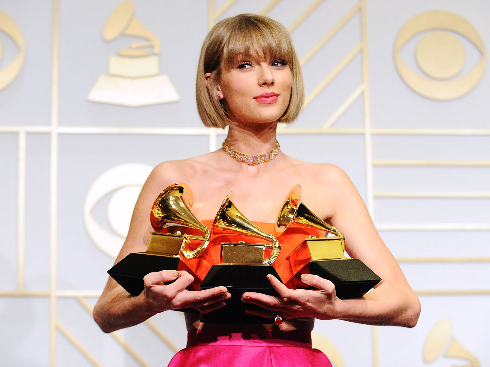
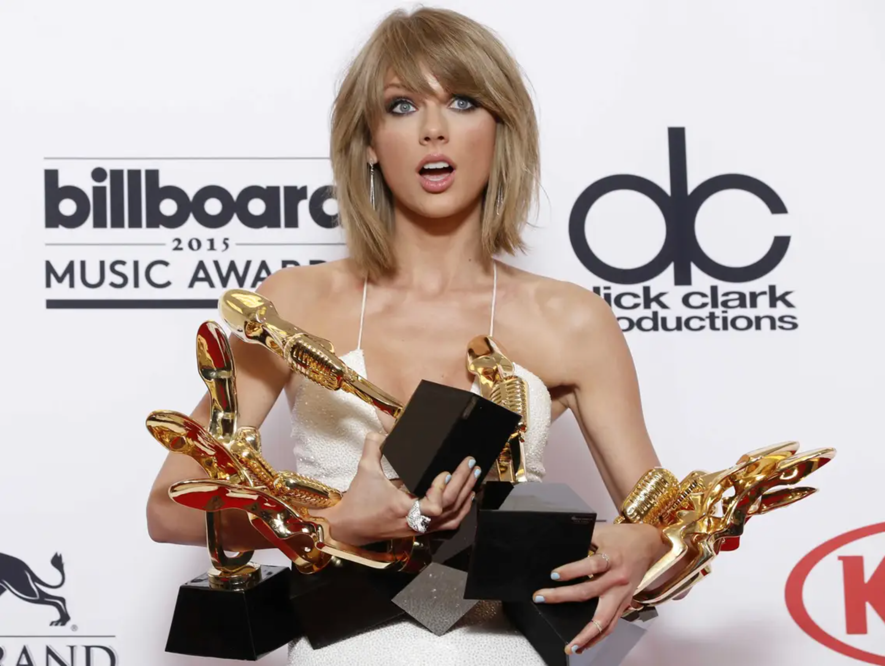
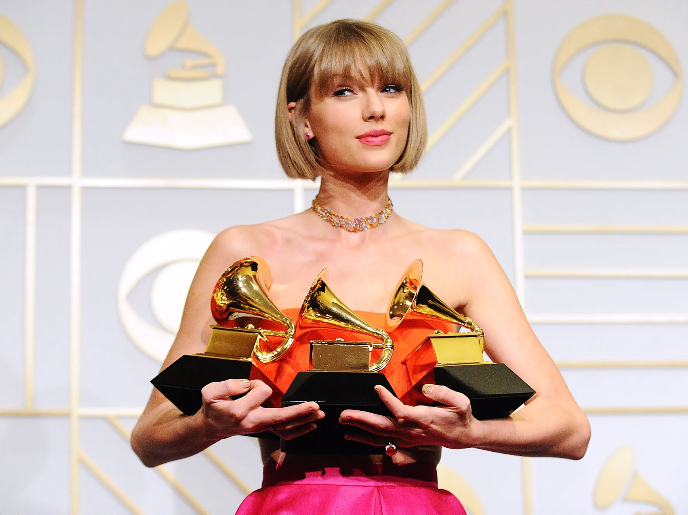
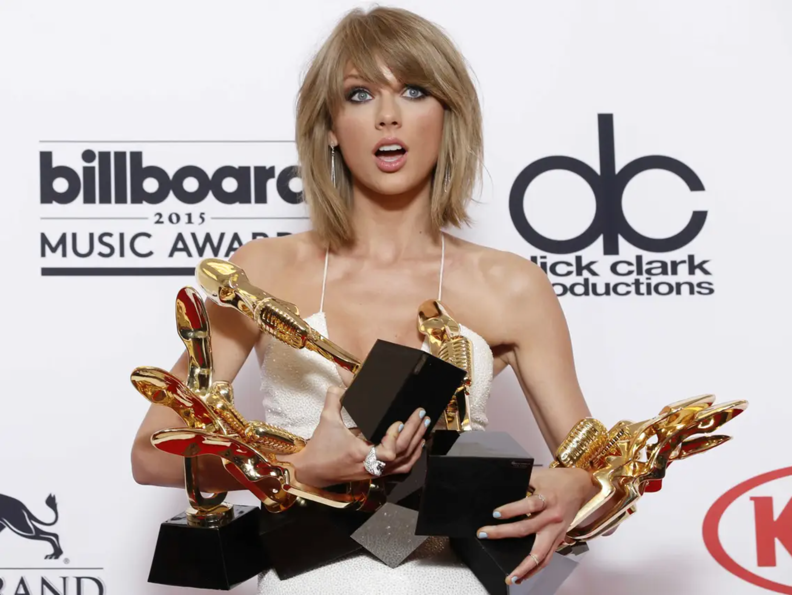

Taylor's Awards
She remains one of the most rewarded female artists in history!
- Tim McGraw
- Academy of Country Music Awards
- American Country Awards
- American Country Countdown Awards
- American Music Awards
- APRA Awards (Australia)
- ARIA Music Awards
- BBC Music Awards
- Billboard Awards
- Billboard Music Awards
- Billboard Touring Awards
- BMI Awards
- BMI Country Awards
- BMI London Awards
- BMI Pop Awards
- Bravo Otto
- Brit Awards
- Canadian Country Music Association
- Capricho Awards
- Channel V Thailand Music Video Awards
- Country Music Association Awards
- Country Music Awards of Australia
- CMT Music Awards
- Do Something Awards
- Echo Awards
- Elle Style Awards
- FiFi Awards
- Glamour Awards
- Golden Globe Awards
- Grammy Awards
- Guinness World Records
- IFPI Global Recording Artist Award
- iHeartRadio Music Awards
- Japan Gold Disc Awards
- Juno Awards
- Meteor Music Awards
- MTV Awards
- MTV Europe Music Awards
- MTV Video Music Awards
- MTV Movie Awards
- MTV Italian Music Awards
- MTV Video Music Awards Japan
- MTV Millennial Awards
- mtvU Woodie Awards
- Much Music Video Awards
- Music Business Association
- Myx Music Awards
- Nashville Songwriters Association International Award
- Nashville Symphony Ball
- Neox Fan Awards
- Nickelodeon Kids' Choice Awards
- American Nickelodeon Kids' Choice Awards
- Nickelodeon Australian Kids' Choice Awards
- Nickelodeon Argentina Kids' Choice Awards
- Nickelodeon UK Kids' Choice Awards
- NME Awards
- O Music Awards
- People's Choice Awards
- Los Premios 40 Principales
- Premios Juventud
- Radio Disney Music Awards
- Ripple of Hope Gala
- SESAC Nashville Music Awards
- Shorty Awards
- SiriusXM Indies Awards
- Songwriters Hall of Fame
- Teen Choice Awards
- World Music Awards
- Young Hollywood Awards
- YouTube Music Awards

 


